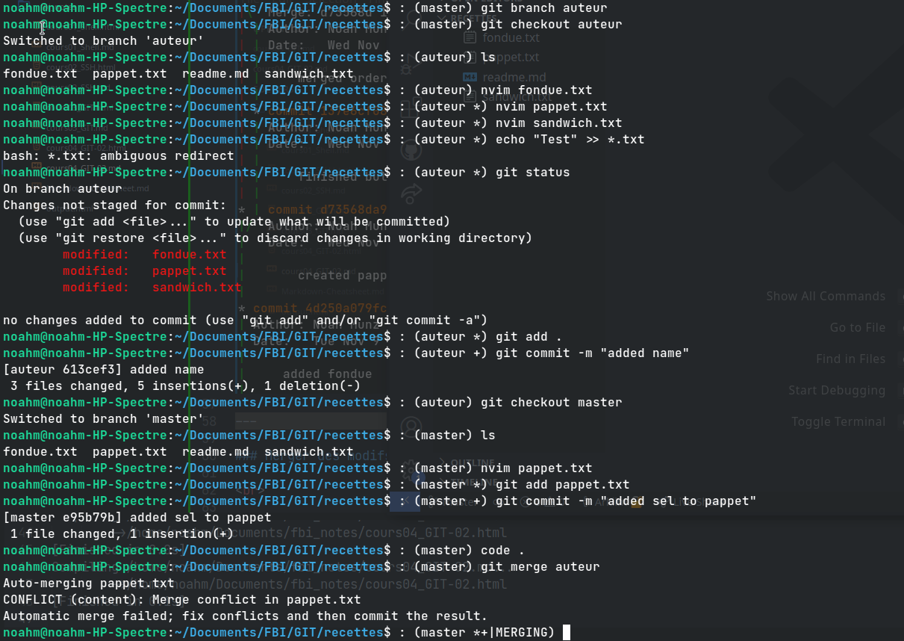
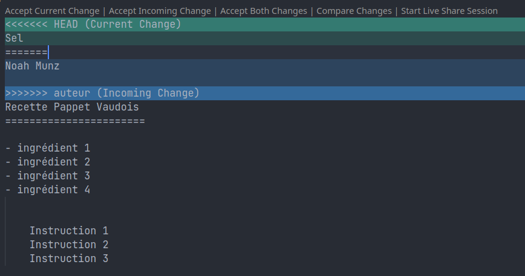
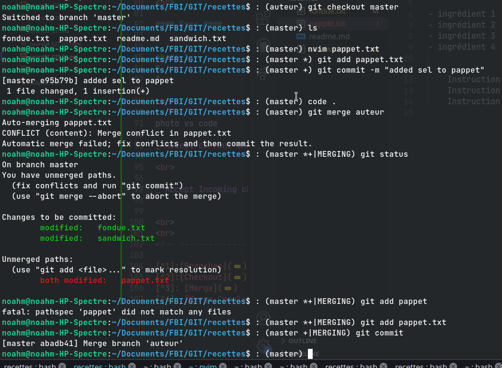
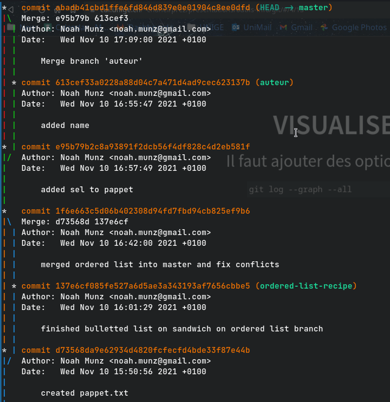
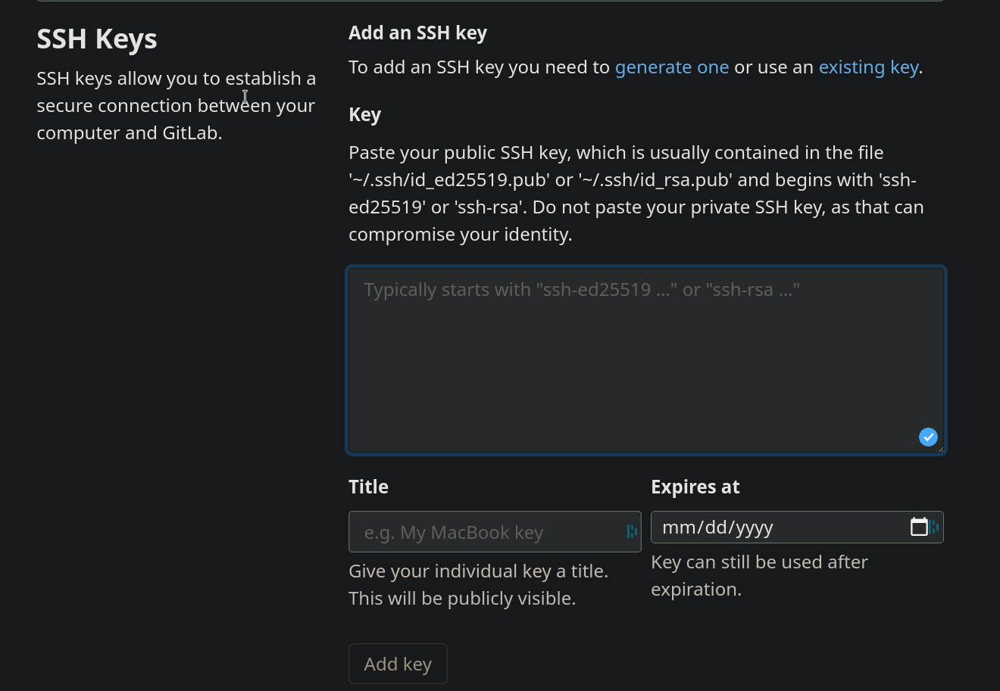
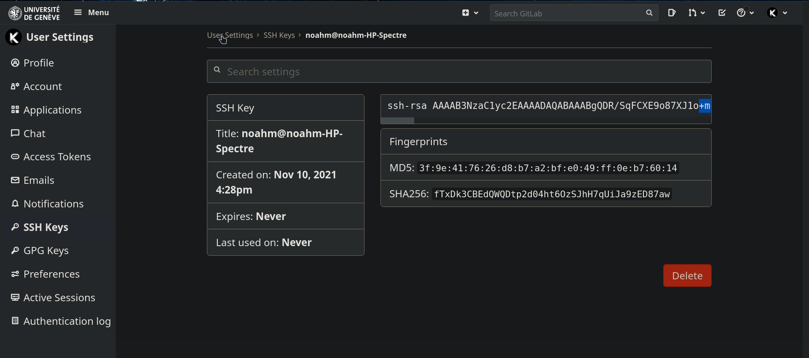
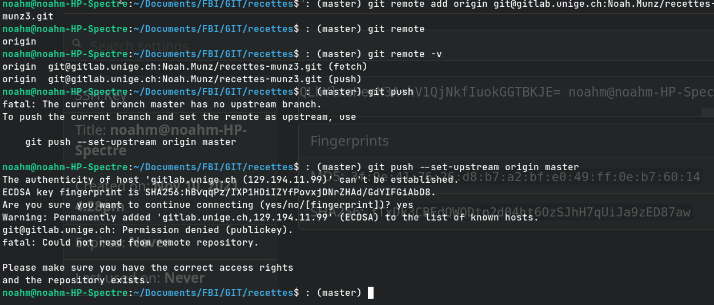
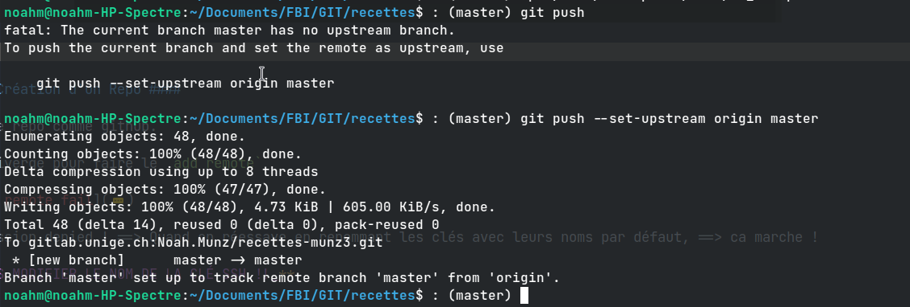
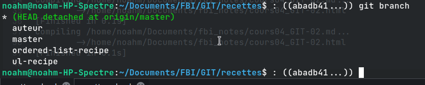

Cours 04 - GIT 02 - Branches & Merges 1
Notes
==> HEAD dépend du commit pas des modifs/add
==> pull = fetch + merge
Exos Branches
=> modif puis checkout sans git add, discard pas complètement, fichier existe mais “pas sur une seule branche” c’est seulement quand on va commit que le “fichier avec les modifs” seront ajoutés uniquement sur la branche où il a été commit
==> Branche dans le directory est lien vers le dernier commit de cette branche ==> comme pointer en C

==> Added ordered-list in sandwich.txt on branch ordered-list-recipe (and git add)
==> Checked out on branch Master (without committing)

And on master ==> added new file pappet.txt. (git add)
So now as staged changes (dans l’index) we have :
- ol in sandwich.txt on branch
ordered-list-recipe - added pappet.txt on branch
master
git commit -m "created pappet.txt"
==> Commit on master ==> Branch diverged.
Weird fact : we changed sandwich.txt and git added it on branch ol-recipe,
and yet git status on master tells us that it was modified & added and that we have to commit it even though, the
changes didn’t occur on this branch.
It’s even worse than that. Since we committed the changes on branch master, the changement we made in the working directory on branch
ordered-list-recipe moved to master.
I.e. the modif was “confirmed” in master and “disappeared” in ordered-list-recipe (reverted back to its old state).
This was the content of the file before: (on ol-recipe)
- ingrédient 1
- ingrédient 2
- ingrédient 3
- cuisson 3 minutes
After :
1 ingrédient 1
2 ingrédient 2
3 ingrédient 3
- cuisson 3 minutes
Now git add… :
git add sandwich.txt
git checkout master
nvim pappet.txt
git add pappet.txt
git commit -m "created pappet.txt"
git checkout ordered-list-recipe
And this is the “new” content of sandwich.txt on ordered-list-recipe:

changes were transferred / assigned to branch master.

Graph de comment la branche ordered-list-recipe a divergé de master.
Check “à quoi a été link” le head i.e. ce qu’il y a dans (HEAD -> [Nom de Branch]),
message après le commit hash: * commit d73568da9e62934d4820fcfecfd4bde33f87e44b ==> (master) <==
Plus d’exemples:
Additional exemples on “modifs that moved with commits” :


Switched from ordered-list to unordered-list on branch ul-recipe.
then committed the change on master.
Then the master took the modifications and ul-recipe was reverted back to its old state.
(*** See below)
Checkout plus d’infos 2
Git Merge 3
Merge - Exo

Dans nvim: (Plus de détail sur comment ça marche dans la partie 04)
<<<<<<< HEAD
1 ingrédient 1
2 ingrédient 2
3 ingrédient 3
=======
- ingrédient 1
- ingrédient 2
- ingrédient 3
>>>>>>>
- cuisson 3 minutes
Conflits ont été fix via nvim, merge peut se conclure.

On voit que la branche ordered-list-recipe à rejoint la branche master et les 2 convergent vers le même point.
Merger des modifs Complexes 4
C’est le ======= qui indique les différentes versions / différences du fichier ainsi que les conflits.
<<<<<<< HEAD
Sel
======= # <== indique fin de la version du fichier qu'il y avait dans le He sur master avant
Noah Munz
>>>>>>> auteur # <== indique la branche qu'on a merge qui a provoqué les conflits
Recette Pappet Vaudois
=======================
- ingrédient 1
- ingrédient 2
- ingrédient 3
- ingrédient 4
Exos


“Accept current changes” veut dire ==> accepter la version du HEAD et discard le reste (current <=> HEAD)
“Accept Incoming changes” veut dire ==> accepter les changements qui viennent (i.e. pas là où on est, pas le HEAD)
==> Resolved


Graph résumé de la résolution des 2 merges & divergences en entier.
Remote 5
Push, Pull request, clone, Fork, Git Workflow etc…
==> Pour pouvoir pull/push en secure il faut le faire ssh.
Connexion à GitLab / Serveur CUI via SSH 6



Création d’un Repo
Create repo, un peu comme sur github mais en passant par SSH:
Clone WITH SSH !!
==> add remote :

Permission denied ! ==> Quand on réessaye en renommant les clés avec leurs noms par défaut, ca marche
==> PAS MODIFIER LE NOM DE LA CLÉ SSH !!

Then:
noahm@noahm-HP-Spectre:~/Documents/FBI/GIT/recettes$ : (master) git status
> On branch master
> Your branch is up to date with 'origin/master'.
> nothing to commit, working tree clean
noahm@noahm-HP-Spectre:~/Documents/FBI/GIT/recettes$ : (master)
Cours 05 - GIT - Fork 7
En ayant déjà clické sur fork sur gitlab ==> Repo qu’on fork est déjà configuré donc on a juste plus qu’à le clone (ssh).
En effet, après avoir fait:
git clone git@gitlab.unige.ch:Noah.Munz/recette-adrien_d.git
==> Tentative de remote add origin mais git nous dit que c’est déjà configuré.

(***)
Further Testing
Partie pas “fact-checked” par prof.
–
Quand on est allé sur branch ul-recipe pour voir que les diffs ont yeet vers master quand on a commit dessus.
=> git status donne:
~/Documents/FBI/GIT/recettes$ : (ul-recipe) git status
> On branch ul-recipe
> nothing to commit, working tree clean
Says clean but when checked out on master again
~/Documents/FBI/GIT/recettes$ : (ul-recipe) git checkout
~/Documents/FBI/GIT/recettes$ : (ul-recipe) git checkout master
> Switched to branch 'master'
> Your branch is ahead of 'origin/master' by 1 commit.
> (use "git push" to publish your local commits)
Need to push ?? Is it because of misstype ? ==> because entered git checkout sans rien derrière ?
Non local rep a été modifié (on a commit) et on pas encore push donc on est juste en avance sur la remote c’est tout.
–
noahm@noahm-HP-Spectre:~/Documents/FBI/GIT/recettes$ : (master) git merge ul-recipe
Already up to date.
Alors que content of sandiwch in master is:
noahm@noahm-HP-Spectre:~/Documents/FBI/GIT/recettes$ : (master) cat sandwich.txt
Noah Munz
// COMME ON A COMMIT SUR MASTER, SANDWICH.TXT SUR BRANCH
ORDERED-LIST A DIVERGÉ ET A PAS PRIS LES CHANGEMENTS !
- ingrédient 1
- ingrédient 2
- ingrédient 3
- cuisson 3 minutes
And sandwich in ul-recipe is:
noahm@noahm-HP-Spectre:~/Documents/FBI/GIT/recettes$ : (ul-recipe) cat sandwich.txt
Noah Munz
// COMME ON A COMMIT SUR MASTER, SANDWICH.TXT SUR BRANCH
ORDERED-LIST A DIVERGÉ ET A PAS PRIS LES CHANGEMENTS !
1 ingrédient 1
2 ingrédient 2
3 ingrédient 3
- cuisson 3 minutes
Pourquoi on peut pas merge ul-recipe dans master ?
==> HEAD a pas bougé :

ORIGIN <=> REMOTE, just push!
try checkout origin/master and not just master
and :

origin/master était bien au stad d’avant. On est maintenant en detached (HEAD est plus à la fin)

–

Just by doing
ul-recipe ==> master ==> "origin/master ?" ==> master
HEAD moved (now at commit “test to see…”), why ?
Hypothèse: maintenant on peut merge.
==> Nope.
Car il considère que la version avec les tirets est la plus récente et que “la branche a déjà été merge” i.e. que le purpose de la création de la branche a été fulfilled.